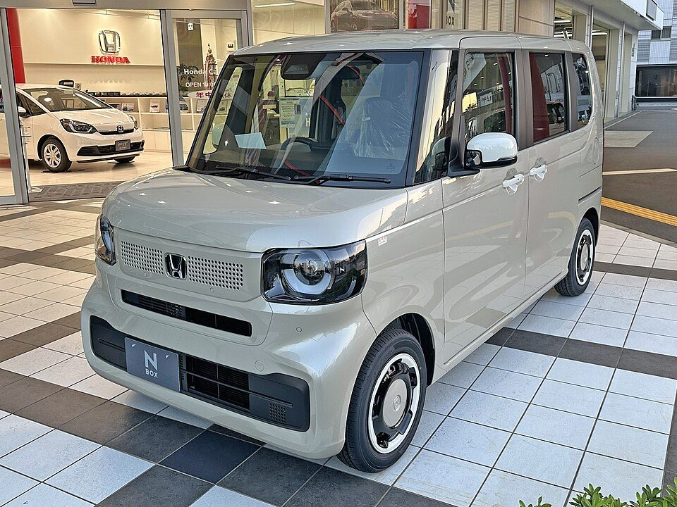
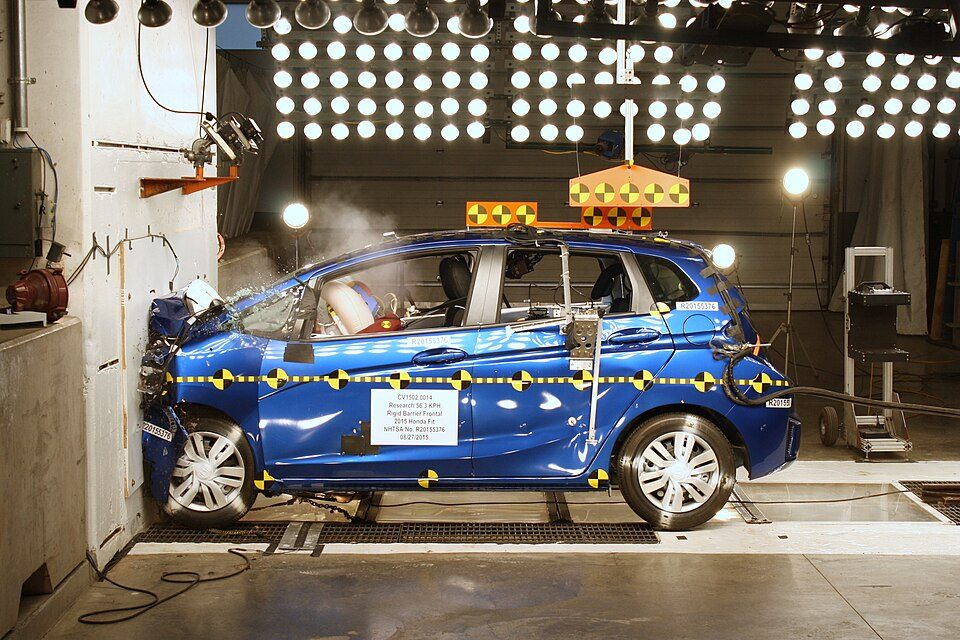
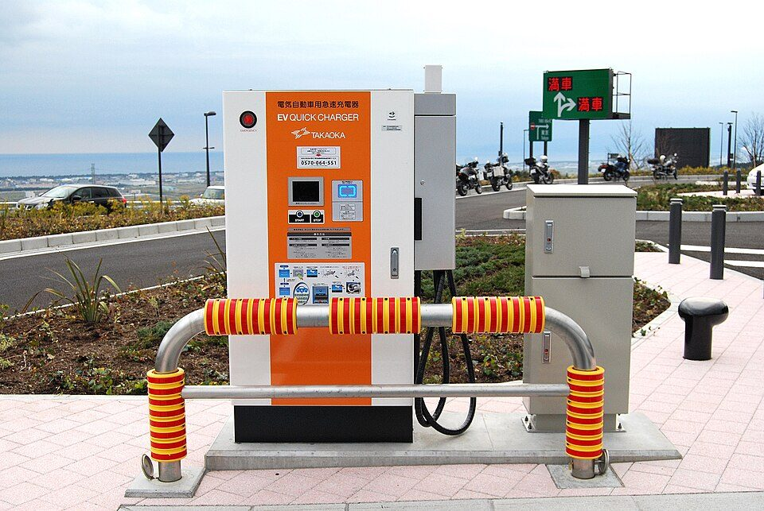

おすすめの車をデータで選ぶ：販売台数・安全性能・燃費・補助金で見る候補（2026年）
要点まとめ
「おすすめの車は？」と聞かれても、使い方や予算で答えは変わります。この記事では、筆者の好みで勧めるのではなく、業界団体の販売統計、国と自動車事故対策機構（ナスバ）の安全性能評価、国土交通省の燃費一覧、国の補助金の表といった公表データを軸ごとに見て、「この軸で選ぶなら、候補はこれ」という形で整理します。順位は公表された数字をそのまま使い、燃費だけは一覧の値を筆者が並べ替えました。買う流れ・諸費用・税金・補助金のしくみ・維持費は車を買う前に知っておきたいこと（2026年版）に、エアバッグのしくみはエアバッグはなぜ一瞬で膨らむ？にまとめています。

「おすすめ」の決め方：5つのものさし
この記事で使うデータと、読むときの注意です。どれも「何年（度）の、どの範囲の数字か」が決まっているので、時点をそろえて見ることが大切です。
| ものさし | 使ったデータ | 時点 | 読むときの注意 |
|---|---|---|---|
| 売れている | 日本自動車販売協会連合会（登録車）、全国軽自動車協会連合会（軽）の車名別の台数[1][2] | 2025年1〜12月 | 同じ車名の車をまとめて数えている |
| 安全性能 | 国土交通省とナスバの自動車アセスメント（★の総合評価）[3][6] | 2020〜2025年度 | 年度で試験の内容が違う。全車種は試験していない |
| 燃費 | 国土交通省「自動車燃費一覧（令和８年３月）」[7] | 令和7年末時点で販売されていた車 | 順位は公表されていない。筆者が値を並べた |
| EVの補助金 | 次世代自動車振興センターの銘柄ごとの補助額の表[8] | 令和8年11月6日現在 | 2027年1月1日以降の登録は額が下がる |
| これからの義務化 | 国土交通省の報道発表[9][10] | 2025年6月・2026年1月 | 新型車から順に義務になる |
補足
この記事は、データの軸ごとに候補を並べたもので、車の良し悪しを評価したり、特定の車を勧めたりするものではありません。人数・置き場所・予算などで候補を絞る順番は、選ぶ順番を参考にしてください。
売れている車（2025年の販売台数）
登録車の1位はヤリス、軽の1位はN-BOX
軽のN-BOXは201,354台で、ヤリスより多い
日本自動車販売協会連合会（自販連）によると、2025年1〜12月の乗用車（軽自動車と海外ブランド車を除く）の車名別の1位はトヨタ ヤリスで166,533台でした[1]。全国軽自動車協会連合会（全軽自協）によると、同じ期間の軽乗用車の1位はホンダ N-BOXで201,354台でした[2]。上位10の顔ぶれは次のとおりです。
| 順位 | 車名（ブランド） | 台数 | 前年比 |
|---|---|---|---|
| 1 | ヤリス（トヨタ） | 166,533 | 100.2% |
| 2 | カローラ（トヨタ） | 138,829 | 83.2% |
| 3 | シエンタ（トヨタ） | 106,558 | 95.9% |
| 4 | ライズ（トヨタ） | 100,851 | 196.9% |
| 5 | ルーミー（トヨタ） | 95,221 | 140.7% |
| 6 | フリード（ホンダ） | 90,437 | 105.9% |
| 7 | アルファード（トヨタ） | 86,959 | 109.6% |
| 8 | ノア（トヨタ） | 80,065 | 113.4% |
| 9 | ヴォクシー（トヨタ） | 78,760 | 111.5% |
| 10 | ノート（日産） | 78,123 | 76.8% |
| 順位 | 車名（メーカー） | 台数 | 前年比 |
|---|---|---|---|
| 1 | N-BOX（ホンダ） | 201,354 | 97.6% |
| 2 | スペーシア（スズキ） | 165,589 | 99.9% |
| 3 | タント（ダイハツ） | 124,619 | 132.9% |
| 4 | ムーヴ（ダイハツ） | 122,349 | 291.3% |
| 5 | ハスラー（スズキ） | 87,972 | 94.8% |
| 6 | ワゴンR（スズキ） | 72,520 | 91.0% |
| 7 | ルークス（日産） | 71,498 | 101.1% |
| 8 | デリカミニ／eK（三菱） | 58,916 | 98.2% |
| 9 | アルト（スズキ） | 57,553 | 84.5% |
| 10 | ミラ（ダイハツ） | 55,777 | 130.4% |
台数の単位は台。前年比は前年（2024年）の同じ期間と比べた割合です[1][2]。
台数は「同じ車名の合計」
派生した車もまとめて数えるので、車名の範囲に注意
2026年度上半期（4〜9月）も、1位はヤリスとN-BOX
登録車ではランドクルーザーが7位に入った
2026年4〜9月の順位表でも、1位は登録車がヤリス（74,143台）、軽がN-BOX（101,564台）でした[11][12]。
安全性能（自動車アセスメントの★）
自動車アセスメント（JNCAP）は、国土交通省とナスバが市販の車を買って試験し、安全性能を点数と★で公表する事業です。平成7年度から行われていて、販売台数が多い車を中心に試験する車を選んでいます[3]。
★の数は、3つの評価の合計点で決まる
2025年度は193.8点満点（予防85.8・衝突100・通報8）
総合評価は★5から★1の5段階です[13]。2025年度は、事故を防ぐ「予防安全」（85.8点満点）、ぶつかったときの「衝突安全」（100点満点）、事故を自動で知らせる「事故自動緊急通報装置」（8点満点）の合計193.8点満点でした[3]。予防安全と衝突安全はそれぞれAからEの5段階で評価されます[13]。

2025年度は4車種で、★5はフォレスターだけ
スバル フォレスターが184.62点（得点率95%）で大賞
2025年度（自動車安全性能2025）に評価した乗用車は4車種で、ファイブスター賞を受けたのはスバル フォレスターだけでした。2026年5月28日の表彰式で、ファイブスター大賞にも選ばれています[3]。
| 車名 | 総合 | 得点（得点率） | 予防／衝突 |
|---|---|---|---|
| スバル フォレスター | ★5 | 184.62（95%） | A／A |
| ホンダ ACCORD | ★4 | 182.01（93%） | A／B |
| MINI COUNTRYMAN | ★4 | 179.00（92%） | B／A |
| フォルクスワーゲン Tiguan | ★4 | 166.66（85%） | A／B |
2020年度以降に★5になった車
安全性能の軸で選ぶなら、まずこの一覧が候補
★で示す総合評価になった2020年度から2025年度までに、★5になった車です。ナスバの試験結果一覧表（Excel）から筆者が年度ごとに整理しました[6]。
| 年度 | ★5になった車 |
|---|---|
| 2025 | フォレスター |
| 2024 | クラウン セダン、CX-80、CIVIC、WR-V |
| 2023 | クロストレック、クラウン クロスオーバー、CX-60、ZR-V、RX、セレナ、NX、N-BOX（軽）、プリウス、エクストレイル |
| 2022 | ヴォクシー、ソルテラ、シエンタ、サクラ（軽）、ステップ ワゴン、eKクロス EV（軽）、カローラ クロス |
| 2021 | レガシィ、ヴェゼル、アウトランダーPHEV、ノート、ルークス（軽）、カローラ ツーリング、アクア、キックス、CX-30 |
| 2020 | レヴォーグ、ハリアー、デイズ（軽）、ヤリス クロス、フィット、ヤリス |
★5の軽乗用車は5車種
デイズ・ルークス・サクラ・eKクロス EV・N-BOX
2020年度以降で★5になった軽乗用車は、デイズ（2020年度）、ルークス（2021年度）、サクラとeKクロス EV（2022年度）、N-BOX（2023年度）です。2024・2025年度の一覧には、軽乗用車の評価がありません[6]。
注意
燃費（国の燃費一覧を並べ替え）
国土交通省の「自動車燃費一覧（令和８年３月）」は、令和7年末時点で新車として販売されていた車の燃費を、メーカー別・車種別に載せたものです[7]。順位表はないので、ガソリン乗用車のWLTCモード燃費の表から、車名ごとに最も良い値を筆者が取り出して並べました[4][15]。カタログの燃費の見方（市街地・郊外・高速道路の3つの値）は、車の種類の違いの章にまとめています。
普通・小型車の上位10
最良はヤリスの36.0km/L（筆者が並べ替え）
軽自動車の上位
最良はアルトの28.2km/L（筆者が並べ替え）
25.0km/Lで、ミラ イース、ハスラー、フレア クロスオーバー、プレオ プラス、ピクシス エポックの5車種が並びます[15]。
この燃費一覧の範囲
- 使ったのは「ガソリン乗用車燃費」の表です。ディーゼル乗用車と輸入自動車は別の表で、今回は入れていません[7]。
- 電気自動車はガソリンを使わないので、この一覧の順位には出てきません。
電気自動車：補助金の車種別の額
電気自動車（EV）・プラグインハイブリッド車（PHEV）などには、国の「クリーンエネルギー自動車導入促進補助金」（CEV補助金）があります。額は車種・グレードごとに決まっていて、経済産業省は、車両の評価に加えて、充電インフラ整備や供給の安定性の確保といったメーカーの取組を総合的に評価して決めているとしています[16]。制度の対象や持ち続ける期間などは2026年に変わったことの章にまとめています。
同じEVでも、額は15万〜130万円と幅がある
2026年12月31日までに登録した場合の額の例
表の単位は千円で、ここでは万円に直しました。この表で電気自動車の額は、最も少ない車が15万円、最も多い車が130万円です[8]。
2027年1月1日以降の登録は、額が下がる
補助額は「登録日」で決まり、2027年からは下がる
| 車名・グレード | 2026年12月31日まで | 2027年1月1日以降 |
|---|---|---|
| トヨタ bZ4X G（FWD） | 130.0 | 78.0 |
| 日産 リーフ B5 S | 129.0 | 77.4 |
| スズキ e ビターラ X | 127.0 | 76.2 |
| テスラ モデル3 RWD | 127.0 | 76.2 |
| トヨタ プリウス G（PHEV） | 85.0 | 51.0 |
| 日産 サクラ X | 58.0 | 45.8 |
| ホンダ N-ONE e: e:G | 58.0 | 45.8 |
| 三菱 eKクロス EV G | 57.4 | 45.4 |
| ヒョンデ KONA Casual | 47.0 | 28.2 |
| BYD DOLPHIN Baseline | 15.0 | 9.0 |

- 2026年3月31日
申請の受付が始まった
令和7年度補正予算のCEV補助金[16]
- 10月21日
経産省が補助額の見直しを発表
2027年1月1日以降に新規登録する車から、見直し後の額[16]
- 11月11日
受付終了の見込みが早まった
10月9日の「12月上旬〜12月下旬」から「11月下旬〜12月上旬目処」へ[5]
- 11月下旬〜12月上旬
受付終了の見込み
申請書の到着日で先着順。予算額に達した日の前日（営業日）で終わる[5]
注意
予算額に達すると、車の登録日や郵送の状況にかかわらず受付が終わり、そのあとに届いた申請には補助金が出ません。次世代自動車振興センターは、平成30年度に受付を早く終えたときは次の年度の補助金で1月1日以降の登録車を対象にした例があるとしつつ、令和9年度の対応について決まっていることはないとしています[5]。
EVの安全性能と走れる距離
★5のEVはサクラ・eKクロス EV・ソルテラ（2022年度）
これから義務になる「踏み間違い」対策
新型の乗用車は、2028年9月から義務に
オートマの乗用車に「ペダル踏み間違い時加速抑制装置」
国土交通省は2025年6月17日、電気自動車を含むオートマの乗用車（クラッチペダルのない乗用車）に、ペダル踏み間違い時加速抑制装置を備えることを義務づける改正を公布しました。適用は、新型乗用車が令和10年（2028年）9月1日、輸入車は令和11年（2029年）9月1日からです[9]。2026年1月9日には基準を強化する改正も公布され、止まった状態だけでなくクリープ走行（ブレーキを離してゆっくり進む状態）からの急加速も抑えることなどが求められます[10]。
- 2025年6月17日
搭載の義務づけを公布
オートマの乗用車が対象[9]
- 2026年1月9日
基準の強化を公布
歩行者も検知の対象に。車両総重量3.5t以下のオートマの貨物車も対象に[10]
- 2028年9月1日
新型乗用車に義務
輸入車は2029年9月1日[9]
- 2030年9月
強化後の基準：新型車
令和12年9月[10]
- 2032年9月
強化後の基準：継続生産車
すでに売られている型も対象（令和14年9月）[10]
自動車アセスメントでも、車ごとの差が見える
2025年度の4車種で、得点率は100%から32%まで
自動車アセスメントは、予防安全の試験項目の一つとして、ペダル踏み間違い時加速抑制を試験しています[3]。筆者の提案として、候補の車が決まったら、ナスバのサイトでその車の試験項目ごとの結果まで見ておくと、★の数だけでは分からない違いが分かります。
3つの軸に重なる車種
「2025年の販売上位10」「自動車アセスメントの★5（2020〜2025年度）」「燃費一覧の上位10（筆者が並べ替え、同じ値を含む）」の3つに、どの車が入るかを図にしました。評価や推薦ではなく、データの重なりを示したものです。
※カローラ: 販売台数はシリーズ全体の合算で、★5はカローラ ツーリング（2021年度）とカローラ クロス（2022年度）、燃費はカローラ・カローラ スポーツ・カローラ ツーリングが上位10に入っています。※ノア: 試験したのはヴォクシーで、ナスバの車種検索では「ヴォクシー/ノア」とまとめて載っています[18]。※ルークス: ★5は2021年度に試験した車の結果です。※ミラ: 燃費一覧に載っているのは「ミラ イース」です。
登録車：販売上位10の★と燃費
3つすべてに入るのはヤリス・カローラ・シエンタ・ノート
| 車名（販売順位） | ★（評価年度） | 燃費の最良値（km/L） | 入っている軸 |
|---|---|---|---|
| ヤリス（1位） | ★5（2020年度） | 36.0 | 3つ |
| カローラ（2位） | ツーリング★5（2021年度）、クロス★5（2022年度） | 30.2 | 3つ（シリーズとして） |
| シエンタ（3位） | ★5（2022年度） | 28.4 | 3つ |
| ライズ（4位） | 一覧になし | 28.0 | 販売 |
| ルーミー（5位） | 一覧になし | 18.4 | 販売 |
| フリード（6位） | ★4（2024年度） | 26.0 | 販売 |
| アルファード（7位） | ★4（2023年度） | 18.9 | 販売 |
| ノア（8位）・ヴォクシー（9位） | ヴォクシーが★5（2022年度） | 23.6（ノア） | 販売・安全 |
| ノート（10位） | ★5（2021年度） | 28.4 | 3つ |
軽乗用車：販売上位10の★と燃費
3つすべてに入る軽はない。2つに入る車は7車種
| 車名（販売順位） | ★（評価年度） | 燃費の最良値（km/L） | 入っている軸 |
|---|---|---|---|
| N-BOX（1位） | ★5（2023年度） | 21.6 | 販売・安全 |
| スペーシア（2位） | ★4（2023年度） | 25.1 | 販売・燃費 |
| タント（3位） | ★4（2023年度） | 22.7 | 販売 |
| ムーヴ（4位） | ムーヴ キャンバスが★4（2022年度） | 22.6 | 販売 |
| ハスラー（5位） | ★4（2020年度） | 25.0 | 販売・燃費 |
| ワゴンR（6位） | ワゴンRスマイルが★4（2022年度） | 25.2 | 販売・燃費 |
| ルークス（7位） | ★5（2021年度） | 21.0 | 販売・安全 |
| デリカミニ／eK（8位） | eKクロスが★4（2020年度） | 23.3（eK） | 販売 |
| アルト（9位） | ★4（2022年度） | 28.2 | 販売・燃費 |
| ミラ（10位） | 一覧になし | 25.0（ミラ イース） | 販売・燃費 |
この図と表の読み方
- ★は試験した年度の結果で、年度ごとに試験内容が違います。燃費は車名ごとの最良値で、グレードによって違います。
- 3つに入らない車が劣っているという意味ではありません。人数・荷物・置き場所・予算に合うかは、別に確かめる必要があります（筆者の見解）。
今回確認できなかった点
- 自販連のヤリスの台数に、ヤリス クロスなどが含まれるかどうか
- 2020〜2023年度の各年度の満点（今回は点数を年度をまたいで比べていない）
- ルークスなど、試験のあとに全面改良された車の評価の扱い
- 国の「燃費の良い乗用車ベスト10」の新しい発表（令和元年末時点のものより新しいものは見つからなかった）
- 経産省の補助額の「評価の基準」の資料（自動取得では開けなかった）
- ホンダの公式サイトの価格・諸元（自動取得では開けなかった）
- 踏み間違い装置の最初の改正（2025年）で、すでに売られている型にいつから適用するか
出典（18件）
閲覧日はいずれも2026年11月11日〜12日
- 乗用車ブランド通称名別順位 2025年1月～12月分（PDF）（一般社団法人 日本自動車販売協会連合会）
- 2025年12月 軽四輪車 通称名別 新車販売確報（一般社団法人 全国軽自動車協会連合会）
- 大賞は、スバル「フォレスター」！！～自動車安全性能 2025 ファイブスター大賞発表～（2026年5月28日、PDF）（独立行政法人 自動車事故対策機構（ナスバ）・国土交通省）
- 自動車燃費一覧（令和８年３月）３．（１）ガソリン乗用車 普通/小型自動車（WLTCモード）（Excel）（国土交通省）
- クリーンエネルギー自動車導入促進補助金（車両）申請受付終了見込み時期について（2026年11月11日公表、PDF）（一般社団法人 次世代自動車振興センター）
- 2025年度までの試験結果一覧表（Excel）（独立行政法人 自動車事故対策機構（ナスバ））
- 自動車燃費一覧（令和８年３月）（国土交通省）
- （別表１）令和７年度補正CEV補助金 銘柄ごとの補助金交付額（令和8年11月6日現在、PDF）（一般社団法人 次世代自動車振興センター）
- 報道発表「ペダル踏み間違い時加速抑制装置の搭載を義務づけます！」（2025年6月17日）（国土交通省）
- 報道発表「ペダル踏み間違い時加速抑制装置の基準を強化します！」（2026年1月9日）（国土交通省）
- ブランド通称名別ランキング（2026年1月～10月、PDF）（一般社団法人 日本自動車販売協会連合会）
- 2026年4月～9月 軽四輪車 通称名別 新車販売確報（一般社団法人 全国軽自動車協会連合会）
- 自動車安全性能 2026 の評価結果（第 1 弾）を公表します！（2026年10月20日、PDF）（独立行政法人 自動車事故対策機構（ナスバ）・国土交通省）
- フォレスター グレード・価格（株式会社SUBARU）
- 自動車燃費一覧（令和８年３月）３．（３）ガソリン乗用車 軽自動車（WLTCモード）（Excel）（国土交通省）
- 令和７年度補正予算「クリーンエネルギー自動車導入促進補助金」（経済産業省）
- リーフ 価格・グレード（日産自動車株式会社）
- 守る（JNCAP）（独立行政法人 自動車事故対策機構（ナスバ））
写真・画像の出典（3件）
- ホンダ N-BOX（2023年発売の型。6BA-JF5型）
写真: Tokumeigakarinoaoshima／Wikimedia Commons（CC BY-SA 4.0） - 前面衝突の試験（アメリカ運輸省道路交通安全局の試験）
写真: Calspan Corporation, National Highway Traffic Administration／Wikimedia Commons（パブリックドメイン） - 電気自動車の急速充電器（新東名高速道路 駿河湾沼津サービスエリア）
写真: Toshinori baba／Wikimedia Commons（CC BY-SA 3.0）